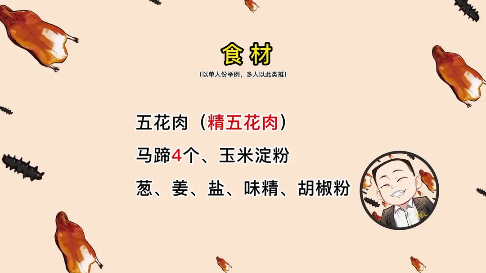
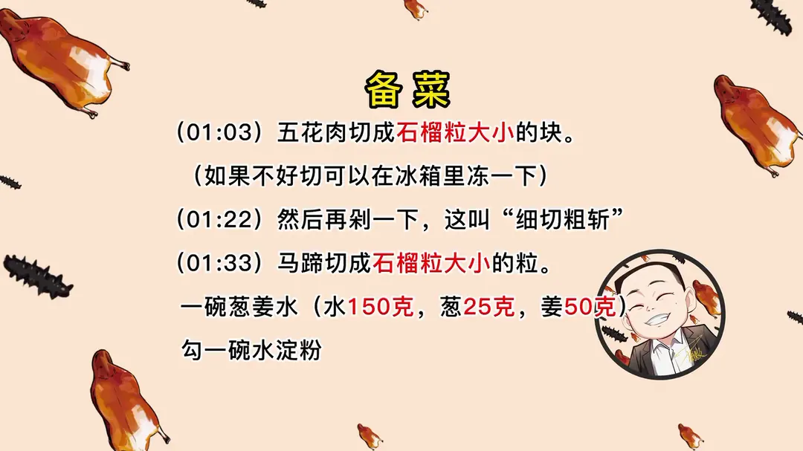
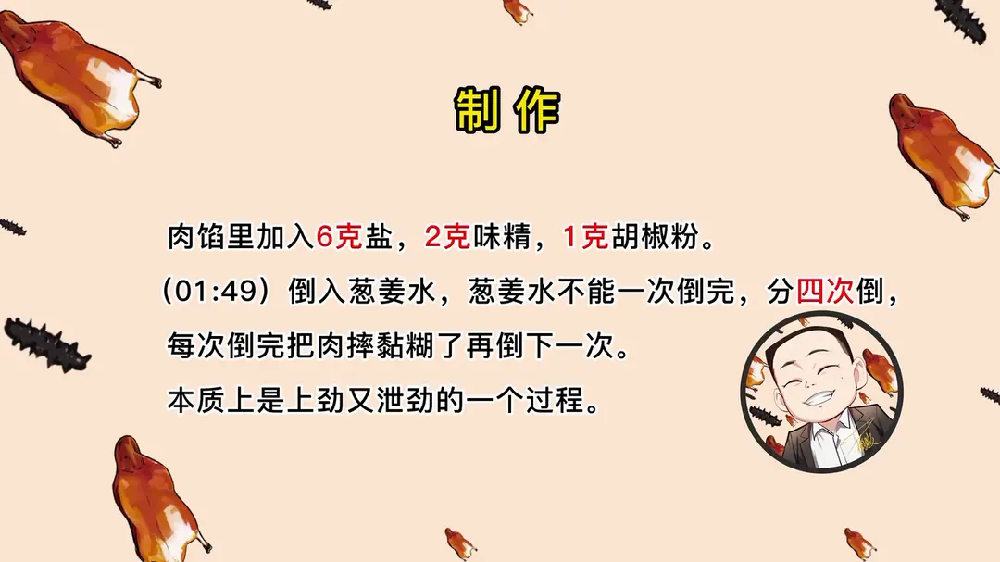
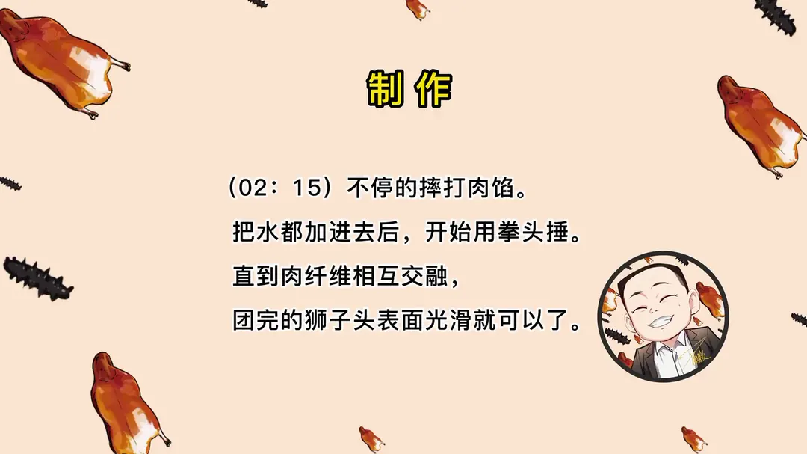
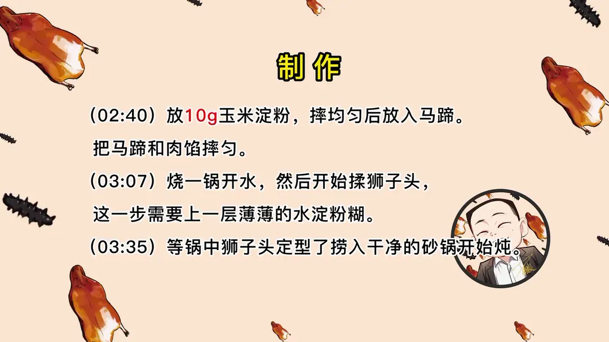
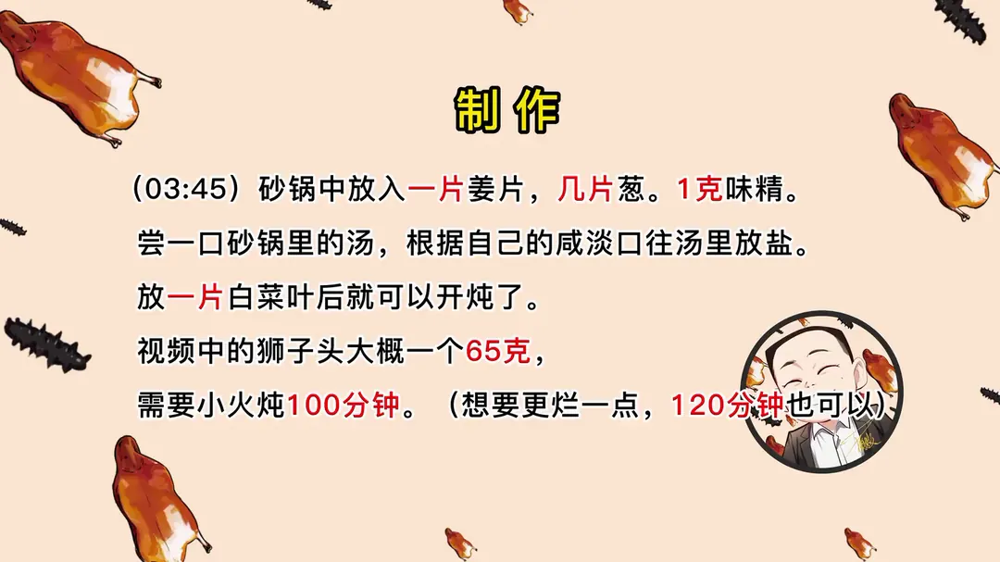
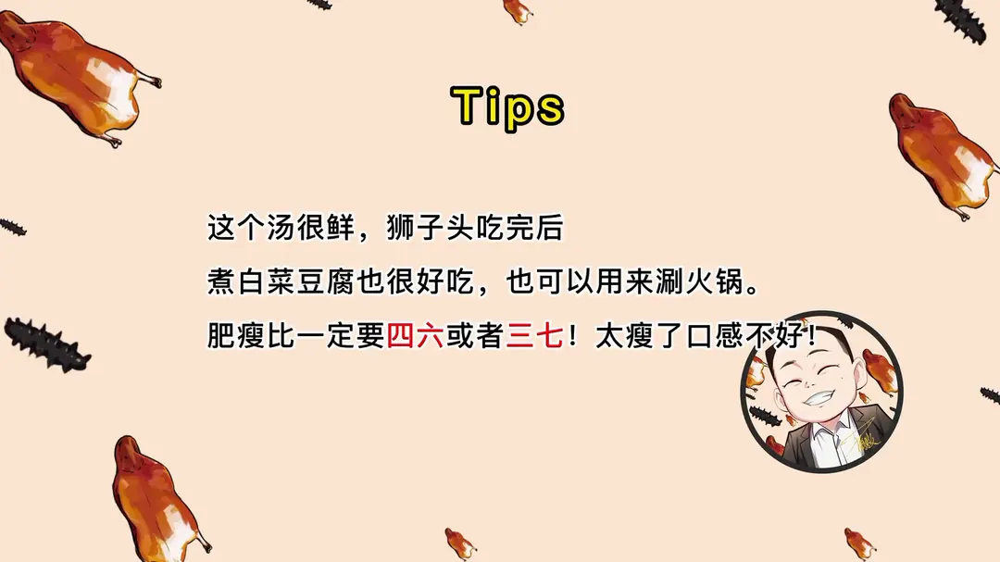

清炖狮子头
隋卞一做。精五花配马蹄细切粗斩，葱姜水分四次打入、摔打上劲，表面挂薄水淀粉，小火炖足 100 分钟。
原视频：https://www.bilibili.com/video/BV1XA411D7dW
食材
五花肉、马蹄、盐 等 15 样
| 类别 | 用料 | 用量 |
|---|---|---|
| 主料 | 五花肉（精五花肉） | 适量 |
| 主料 | 马蹄 | 4 个 |
| 肉馅 | 盐 | 6g |
| 肉馅 | 味精 | 2g |
| 肉馅 | 胡椒粉 | 1g |
| 肉馅 | 葱姜水（水） | 150g |
| 肉馅 | 葱 | 25g |
| 肉馅 | 姜 | 50g |
| 肉馅 | 玉米淀粉 | 10g |
| 挂糊 | 水淀粉 | 1 碗（挂薄薄一层） |
| 炖制 | 姜片 | 1 片 |
| 炖制 | 葱 | 几片 |
| 炖制 | 味精 | 1g |
| 炖制 | 盐 | 适量 |
| 炖制 | 白菜叶 | 1 片 |
步骤
- 细切粗斩：五花肉切成石榴粒大小的块（如果不好切可以在冰箱里冻一下），然后再剁一下，这叫「细切粗斩」。
- 切马蹄：马蹄切成石榴粒大小的粒；备一碗葱姜水（水 150g、葱 25g、姜 50g），再勾一碗水淀粉。
- 调味：肉馅里加入 6g 盐、2g 味精、1g 胡椒粉。
- 打葱姜水：倒入葱姜水，不能一次倒完，分四次倒，每次倒完把肉摔黏糊了再倒下一次，本质上是上劲又泄劲的一个过程。
- 摔打：不停地摔打肉馅，把水都加进去后开始用拳头捶，直到肉纤维相互交融，团完的狮子头表面光滑就可以了。
- 加淀粉和马蹄：放 10g 玉米淀粉，摔均匀后放入马蹄，把马蹄和肉馅摔匀。
- 汆制：烧一锅开水，然后开始揉狮子头，这一步需要上一层薄薄的水淀粉糊。
- 炖制：等锅中狮子头定型了捞入干净的砂锅开始炖，砂锅中放入一片姜片、几片葱、1g 味精，尝一口砂锅里的汤，根据自己的咸淡口往汤里放盐，放一片白菜叶后就可以开炖了。
- 火候：视频中的狮子头大概一个 65g，需要小火炖 100 分钟，想要更烂一点，120 分钟也可以。
小贴士
- 这个汤很鲜，狮子头吃完后煮白菜豆腐也很好吃，也可以用来涮火锅。
- 肥瘦比一定要四六或者三七，太瘦了口感不好。
讲解要点
难度：★★★★☆（手法不难，难在摔打上劲和打水比例，散团就前功尽弃）
为什么这么做
- 只选硬五花、肥瘦四六或三七：靠上、靠近通脊的那部分肉紧实，炖完还能成团；肥瘦太瘦口感发柴、也不够松软。肉的肥肉要洁白、瘦肉颜色不要过深，颜色深的通常是老猪，炖不烂。
- 细切粗斩：先切片切丝再切粒，最后只粗粗斩几刀，颗粒大小不一，摔打时才容易相互粘连、成品才有嚼头。
- 葱姜水分四次打入：一次倒完肉吃不下水，会流出来；每次摔到黏糊再加下一次，本质上是上劲又泄劲。一斤肉三两水是新手的安全线。
- 用拳头捶：捶的时候肉粒被压扁，每颗都抱得特别紧；捶到表面光滑、看不出明显颗粒才算到位。
- 马蹄最后放：马蹄提前放会出水，影响成型；同理，想加蟹黄蟹粉也是这个时候放。
- 表面挂一层薄水淀粉：淀粉促进成型，更多是把中间的水分封住，炖出来才松软不散。
- 汆完换到干净的砂锅里炖：第一锅水里有渗出的淀粉，会发浑；换锅炖出来更清爽。
- 汤的咸淡要和肉馅一致、盖一片白菜叶：狮子头的味靠摔打时就定好了，汤太淡会把咸味煮出来；白菜叶既能吸油，又让狮子头保持洁白。
容易翻车
- 水一次进得太多，或者没摔上劲就下锅，一煮就散。
- 火太大，表面定型撞在一起，形不成完整的团。
- 砂锅里的汤没尝咸淡，成品越炖越寡。
- 火候不够炖不烂，火候过头表面就起皱、发柴（视频里那颗被点名的就是炖过头了）。
热评补充
- 有网友照做时整锅散掉，最后改成了蒸肉饼——散团基本都能追到「水没打进去、没捶上劲」这两点上。
原片尾卡







原片文案
AI 字幕校准稿
学会这个菜，丈母娘问我要彩礼，那都得少要 3 万。不知道你们是从哪个视频认识的我啊，我记得我第一出圈应该是去的无名居。检查狮子头的标准，拿筷子直接能插起来。这个火候不够，肥少说。
五花肉可以按四六、三七来做，这个我估计最多也就二八，所以吃起来没有那么的松软。这不用挑，一看表面就知道它已经炖过火了。狮子头快成我的代名词了，今天我教你们做我的版本的清炖狮子头。需要准备什么不用记，视频的片尾会有详细的清单。
首先要准备的就是五花肉。我教大家怎么选：只能选中间以上的部分，它也叫硬五花；下边比较稀松，拉开以后全是跟海绵体似的，这块就不适合做狮子头。你们去买菜的时候怎么跟卖肉的说呢？要买整块五花肉，三分之二往上、靠近猪肉通脊那块。选肉的时候注意颜色，肥肉部分一定要洁白，瘦肉部位的颜色不要太深，这种颜色的应该是小猪，老猪就不好做，而且炖不烂。
肉要去皮，拉个窟窿勾着手指头，先切片，薄厚要一致。如果您刀工稍微差一点，可以先放到冷冻，把它冻硬了再切，切成粗丝，反过来切粒，粒是一十六粒大小。切完之后咱们要把它剁一下，这叫细切粗斩，就是让它在调味摔打的时候容易相互粘连。
然后切点马蹄，马蹄不能放太多，容易出水，影响狮子头的成型。粒跟刚才那肉粒差不多大就行了。
开始摔打。肉馅里边要加盐，来点味精、胡椒粉，然后加葱姜水，逐步地打入。越抓越黏糊，然后在黏糊的时候继续往里加水，不能一次加足。往旁边摔，摔完之后换一个方向往这边摔。新手怎么判断？一斤照着三两水，然后分四次加水，太多你也掌握不好了，水太少就太干。
接下来就是独门秘方了——用这个手去锤，我跟师傅都汇报过，师傅说有道理。用拳头锤，锤的时候肉的小颗粒就会变扁，每个颗粒就抱得特别紧。想想对你不好的老板，你就打起来。你看一摔一颠，然后表面特别光滑，没有肉的那种特别明显的颗粒感觉就可以了。
然后加玉米淀粉，少量的淀粉，主要是起到一部分粘连作用。然后把马蹄现在放进去，不能提前放，提前放容易出水。要是蟹黄蟹粉也是现在放。然后要把玉米淀粉放在碗里边，兑上一点水，一会儿这汆狮子头用。
开火，起一锅水。取一团肉馅，注意看我的手法，摔一个形状，表面挂一点淀粉——表面的淀粉主要是促进成型，更多地保留住中间的水分，大概是个圆就行。大火一直烧，等它表面成型了之后给它换一个锅。煮的时候表面会有一些淀粉，你看它锅里边会有点白白的，换锅炖出来更清爽一点。
那个汤来一点味精，然后里边搁一片姜、搁点葱去去腥味，搁一点点就行了。然后尝一口汤，不咸再补点，因为不知道你们家的锅多大，你就边做边尝。在摔打狮子头的时候，它里边的咸味是刚刚好的，直接这么水煮，它就会把味道煮得很淡；所以咱们这汤味要跟狮子头那个咸淡味道一致，它就不会流失咸味了，吃着会更好一些。
盖个白菜叶，狮子头都在白菜叶下面盖上，炖出来以后就比较洁白，而且白菜还可以吸油。盖上盖开锅，关小火慢炖 100 分钟。
到时间了，把上面的白菜夹出来。你们看到上面有油花是正常的，一般这种清炖狮子头多少都是有油花的。我们上高档宴席的时候，会把它拿出来以后单配个汤；但咱们在家里边吃，那不就省略了。搁几个油菜点缀一下，清炖狮子头就好了。
来尝尝哥这手艺。咱们探店吃过狮子头也不少，味道这么正的，我感觉还没吃到——它里边的肉一入嘴完全就化了，但是又不是完全没有颗粒感，在嘴巴里还是有嚼头的，它又不腻。只有猪肉的那种香，和马蹄提供的一丝丝清甜的味道，这个很好吃。而且我感觉你这个做的特别方便，因为平常在外面吃，大概就是一颗卖五十八；像这种一次一大锅，一家人吃的也方便。而且我跟大伙讲的料，家里全有。
上面飘一部分油花，我这个做法把更复杂的那种吊汤的工艺给他简化了，更适合咱们在家庭做。你们这个汤也可以涮点菜，来点白菜豆腐涮一涮也非常好。冬天来了一大锅咕嘟咕嘟，全家人坐在一起热热乎乎的，非常好，也象征着团团圆圆。